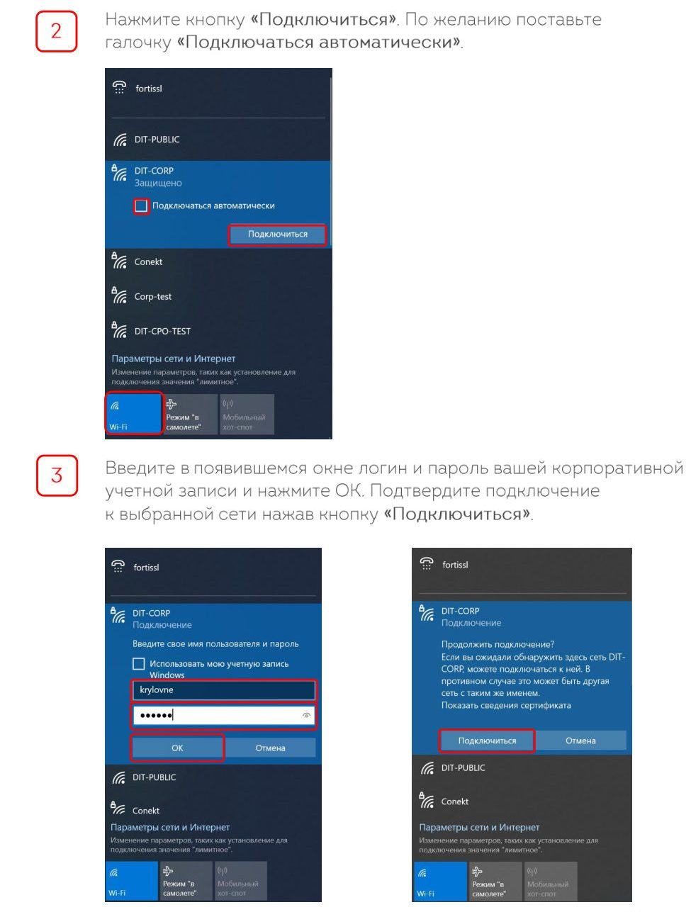
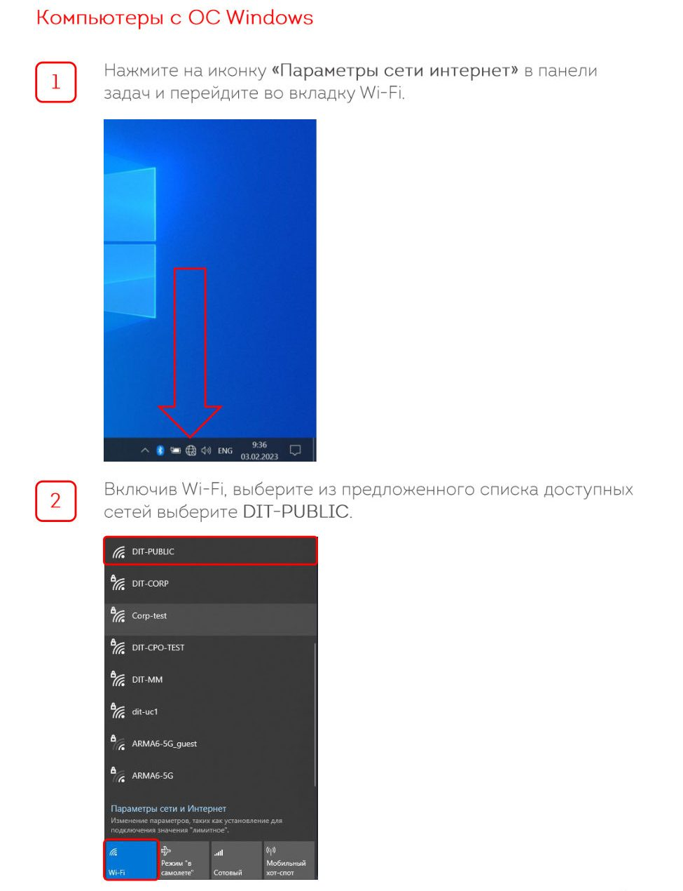
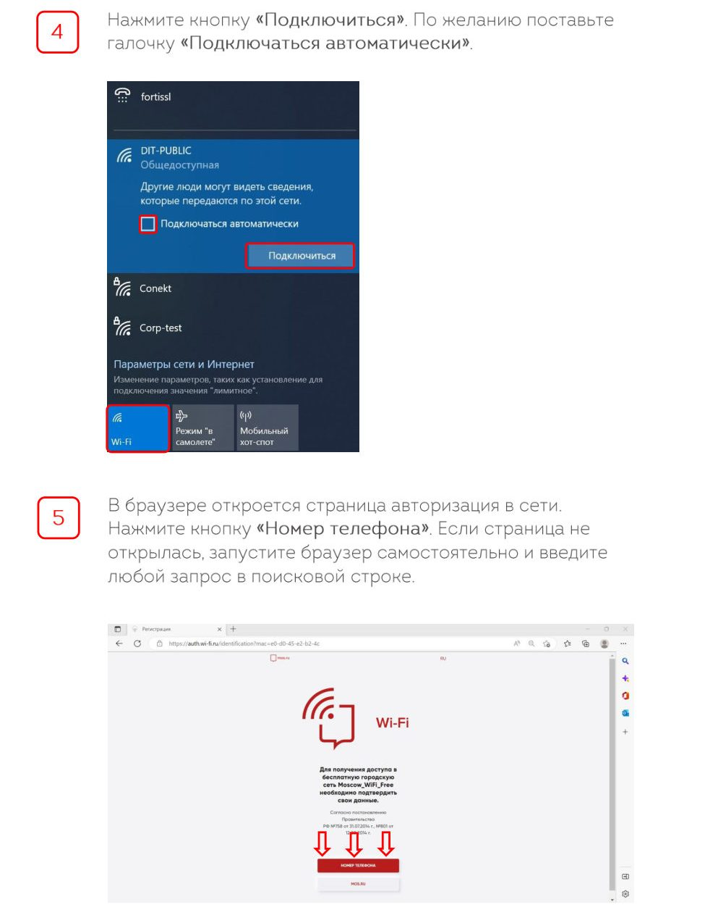
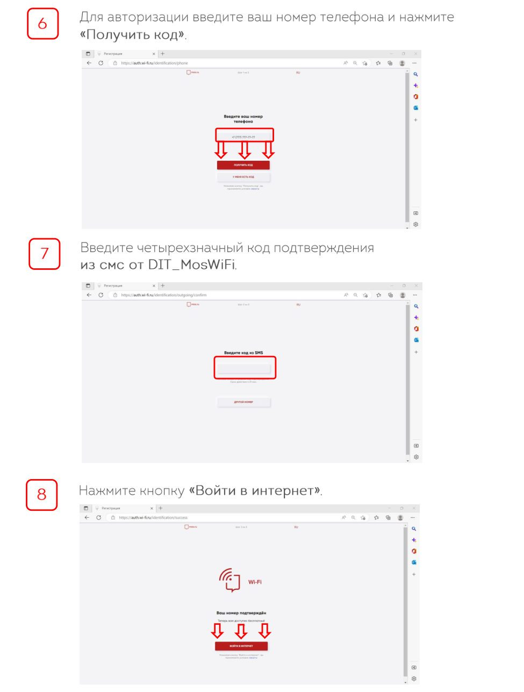

DIT-Corp
Корпоративная сеть — вход по логину и паролю единой учётной записи (тем же, что на компьютере и в почте), в ней доступны сетевые ресурсы.


DIT-PUBLIC
Гостевая сеть — авторизация по номеру телефона и коду из СМС, подходит для личных устройств и гостей.


